Callout
Organisms in Domain Eubacteria (commonly called bacteria) and Domain Archaea are prokaryotes.
They are single-celled organisms, and they lack membrane-bound organelles.
Prokaryotes are the smallest organisms on Earth.
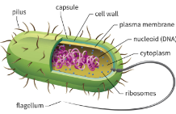
Harms of Bacteria
Bacteria are responsible for many diseases in humans and in other organisms.
Infectious bacteria are called pathogens and are responsible for many human deaths each year.
Callout
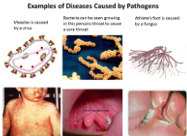
Why Prokaryotes Are Important
Bacteria, and some archaea, play key roles in ecosystems. Many are decomposers, and others are producers.
Bacteria fix, or convert, atmospheric nitrogen into chemical compounds that can be used by plants.
Photosynthetic bacteria are the major producers in marine ecosystems and are therefore major producers of atmospheric oxygen.
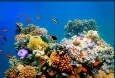
Mutualism is a relationship between two species that live in very close association with each other, whereby each benefits from the association.
Antibiotic is a substance that can kill or weaken microorganisms; natural antibiotics are produced by bacteria or fungi, whereas synthetic antibiotics are manufactured.
Callout
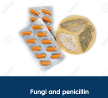
The Domain eubacteria
Classification and Phylogeny
The Domain Eubacteria has more than 12 separate evolutionary branches, or groups.
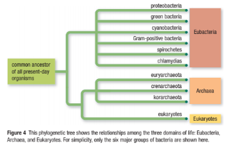
Accordion
Some are photosynthetic but use a form of photosynthesis that differs from that of plants.
Ancient forms of these bacteria were the likely ancestors of eukaryotic mitochondria.
Some are nitrogen fixing.
They are responsible for many diseases, including bubonic plague, gonorrhea, dysentery, and some ulcers.
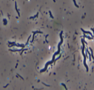
They use a form of photosynthesis that differs from that of plants.
They are usually found in salt-water environments or hot springs.
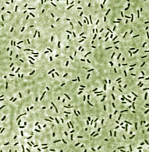
They use a form of photosynthesis similar to plants and other eukaryotes.
Ancient forms of these bacteria were the likely ancestors of eukaryotic chloroplasts.
They play major roles as producers and nitrogen fixers in aquatic ecosystems.
They form symbiotic relationships with fungi.
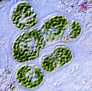
They cause many diseases, including anthrax, strep throat, bacterial pneumonia, and meningitis.
They are used in food production (for example, lactobacillus is used in yogurt and probiotic products).
Some have lost their cell wall.
One type—mycoplasmas—are the smallest known cells (0.1 μm to 0.2 μm).
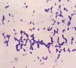
Their spiral-shaped flagellum is embedded in their cytoplasm.
They move with a corkscrew motion.
They cause syphilis.
Symbiotic spirochetes in termite intestines digest wood fibre.
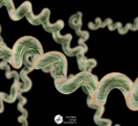
All are parasites that live within other cells.
They cause chlamydia, one of the most common sexually transmitted infections.
They cause trachoma, the leading cause of blindness in humans.
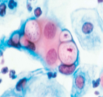
A bacterium’s chromosome is a single loop of DNA (deoxyribonucleic acid) that is found in a region called the nucleoid.
Ribosomes, which are used in protein synthesis, are scattered throughout the cytoplasm.
The pili are made of stiff proteins and help the cell attach to other cells or surfaces.
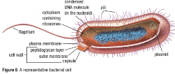
Callout
Metabolism
Autotrophic bacteria make their own food. They assemble complex carbon molecules from simple inorganic chemicals—substances such as carbon dioxide, water, and minerals that are part of the abiotic environment.
Heterotrophic bacteria get their nutrients from carbon-containing organic chemicals found in other living organisms or their remains
Reproduction
Prokaryotes normally reproduce asexually. In this process, a parent cell divides by binary fission, producing two daughter cells.
Each daughter cell receives an exact copy of the genetic material from the parent cell—its chromosome and plasmids.
Sometimes mistakes are made when the genetic material is copied.
Callout
Bacterial Diseases
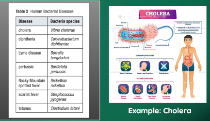
Antibiotics and Antibiotic Resistance
Antibiotics are immensely valuable to humans. By mass-producing a wide variety of antibiotics, we can often kill bacteria where they are unwanted.
Unfortunately, though antibiotics have saved many millions of lives, they may not be effective in the future. The overuse of antibiotics can cause bacteria to adapt and become resistant so the antibiotics are no longer effective.